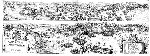

[Geen titel; opdracht:] Inlustriss. et potent. DD. Ordinibus Generalibus Provinciarum Foederatarum Belgii [...] rei bene gestae historiam a se depictam atque in aere exsculptam Iacobus de Gheyn inter faustas civium acclamationes D[edicat] C[onsecrat] Q[ue]. 2 bladen, kopergravure, 330 x 900 mm. [Amsterdam,] C.J. Visscher excudit, [kort na 1621.] -- (COLLBN Port. 78 N 138)
Opmerkelijk aan deze gravure van de ruiterslag bij Turnhout is dat het beeld in twee smalle horizontale stroken is gesplitst. De bovenste geeft een weidse en panoramische blik op het militaire treffen in zijn geheel, terwijl de onderste als het ware een gedetailleerder kijk op het rechterdeel van de bovenste biedt.
Het kan niet anders of deze uitzonderlijke compositorische opbouw heeft deel uitgemaakt van de opdracht aan de graveur, de befaamde Jacques de Gheyn II (1565-1629). Eigener beweging zou een zestiende-eeuwse kunstenaar zo iets nooit hebben bedacht, zo’n vreemdsoortige splitsing. Het tekent de zorg die in de Tachtigjarige Oorlog van overheidswege werd besteed aan een visuele vastlegging van belangrijke episoden en keerpunten in de steeds weer oplaaiende oorlog tegen Spanje.
Uit een door De Gheyn gegraveerd overzicht van het beleg, dat prins Maurits in 1593 -- dus vier jaar eerder -- voor de vesting Geertruidenberg sloeg, blijkt, dat aan het eind van de zestiende eeuw de twee voor de zeventiende eeuw zo typerende manieren van uitbeelden van oorlogshandelingen zich al aan het uitkristalliseren waren.
In dit laatste geval -- met betrekking tot Geertruidenberg dus -- hebben we (evenals bij de prenten over de slag bij Nieuwpoort, zie nummer 117) te maken met een overzichtskaart, waarop, als in een strategospel, de legereenheden zo staan opgesteld dat ze voor de insider een beeld oproepen van de indrukwekkende tactieken die prins Maurits beroemd maakten.
Hier, bij Turnhout, waar tegen de toen geldende regels in, een gevecht midden in de winter, op 24 januari, plaatsgreep, wilde men vastleggen wat voor een effect dat moet hebben gehad, al die vechtende legerscharen op de hei tussen het kale geboomte. Maar ook hier -- en in de onderste strook op gedetailleerder wijze dan dat bovenaan in beeld kon -- moest worden getoond dank zij welke geniale manoeuvres de overwinning werd behaald.
De Gheyn zou heel wel in staat zijn geweest om in de onderste strook via een aantal ‘opnamen’ van heel dichtbij een naar ons begrip indringender beeld van het gebeuren op te roepen, maar zó formuleerde men toentertijd van overheidswege de opdrachten voor officiële prenten als deze niet.
De hier getoonde prent is een tweede staat, waarschijnlijk direct na het Twaalfjarig Bestand door Claes Jansz Visscher uitgegeven. De oorspronkelijke uitgave maakt deel uit van een reeks gravures van groot formaat die alle omstreeks 1600 het licht zagen en de grote krijgsdaden van prins Maurits tot onderwerp hebben, meestal opgeluisterd door lofdichten van Hugo de Groot. Wat zonder twijfel wel tot deze opdracht behoord zal hebben, waren de wapenborden van de Staten Generaal en van de prins, die ook bij de weergave van de slag bij Nieuwpoort niet ontbreken.
Literatuur
- F. Muller, De Nederlandsche geschiedenis in platen. Beredeneerde beschrijving van Nederlandsche historieplaten, zinneprenten en historische kaarten. Amsterdam 1863-1882. 4 dln, I, nr. 1056.
- A.G.G.M. Eyffinger, Grotius poeta. Aspecten van Hugo Grotius’ dichterschap. [‘s-Gravenhage 1981], p. 19-59.
| vorige pagina | top pagina |